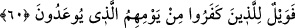

59. Muhakkak ki bu zulmedenlerin de, geçmişlerinin payı gibi (azaptan) bir
payları vardır! O halde acele etmesinler!
“Muhakkak ki, bu zulmedenlerin de” yâni ebedi hayatı sağlayacak olan nasihatlara
karşı çıkarak Rasûlullah (s.a.)’i yalanlama veya onun sözlerini tasdik yerine tekzîb etme
sûretiyle nefislerine zulmeden Mekkeliler için de “geçmişlerinin” geçmiş milletlerin
“azaptan bir payları vardır!”
Zenûb, sakaların su dağıttıkları kovadır ve bu kelime de oradan alınmıştır. Bu, içi
suyla dolu olan bir kova anlamındadır. Şâir şöyle der:
Hem size hem de bize birer dolu kova
Eğer istemezseniz (bırakın) kuyuyu bize.
Müfredât’ta müellif “zenûb” kelimesinin “kulpu olan kova” anlamına geldiğini ve bu
kova ile “azabtan nasib” mânâsının istiâre olunduğunu belirtmiştir.
Kâmûs’ta da “zenûb” kelimesine şu anlamlar verilmiştir: Kuyruğunun kılları bol at,
şerri, kötülüğü çok günler, su ile dolu kova, boş kova, haz, hisse.
“O halde acele etmesinler!” “Benden acele olarak o azabı getirmemi istemesinler.
Çünki onun belli bir vakti var. O kesinleştirilmiş vaktinde size gelecektir” şeklindedir.
“İsta’celehû” fiilinin mânâsının; “bir kişiyi acele etmeye teşvik ile bunu yapmasını
emretmek” veya “birinden bir şeyin âcilen vukû bulmasını istemek” olduğu
söylenmiştir. “Allah’ın emri ha geldi ha gelecek, artık onu acele istemeyin...” (Nahl
16/1) âyeti de bu ikinciye istidlâlen getirilmiştir ki bu, Mekkelilerin “Eğer siz doğru
söylüyorsanız bu vaad ne zamandır?” sözlerine cevap olarak inmiş bir âyettir. Zirâ Nadr
b. Hâris, azabın âcilen gelmesini istemişti. Ona Bedir savaşına kadar müddet tanındı.
Bedir savaşında ise öldürülerek cehennemlik oldu. Önce öldürülme sonra da
cehenneme atılma sûretiye istediği o azaba çarptırıldı.
60. Başlarına gelecek (acı) günlerinden dolayı vay o kâfirlerin hâline!
“Vay o kâfirlerin hâline!” “Veyl”; azap, bedbahtlık ve kederden daha kötü bir hâldir.
“Veyl”in cehennemde bir vâdi olduğu da söylenmektedir. Âyette sıla cümlesi zamirin
yerine konulmuştur. Sebebi de onların küfürle aynı noktada bulunduklarını ve “küfür”
hükmünün her iki grubu da içine aldığını bildirmek içindir.
“Başlarına gelecek (acı) günlerinden dolayı” kısmında (min) harf-i ceri sebep
bildirmek için getirilmiştir Yâni “Bedir günü ile veya kıyâmet günü ile
uyarıldıklarından dolayı” demektir. Burdaki “yevm” kelimesinin; gelecek Tûr sûresinin
baş kısmına uyması bakımından “kıyâmet günü” anlamında olması daha münasiptir. Her